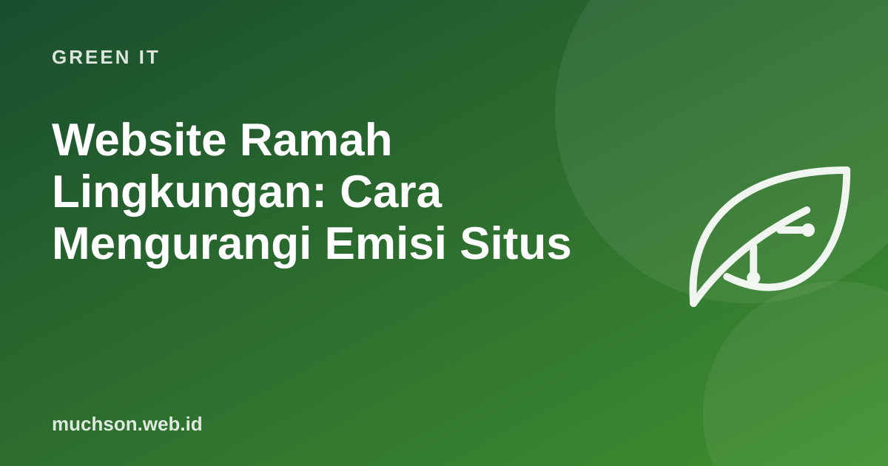

Website Ramah Lingkungan: Cara Mengurangi Emisi Situs
Halaman web makin berat dari tahun ke tahun. Menurut Web Almanac 2024 dari HTTP Archive, halaman mobile median sudah sekitar 2,3 MB. Setiap byte harus disimpan, dikirim melalui jaringan, dan diproses perangkat pengguna. Website yang lebih ringan memakai lebih sedikit energi, lebih cepat dibuka, dan lebih ramah bagi pengguna dengan kuota terbatas.

Tiga manfaat sekaligus
Di mana beratnya berasal
| Komponen | Masalah umum | Perbaikan |
|---|---|---|
| Gambar | Foto 4000 px untuk tampilan 800 px; format JPEG/PNG lama | Ukuran sesuai tampilan, WebP/AVIF, srcset, lazy loading |
| JavaScript | Library besar untuk fitur kecil, banyak skrip pihak ketiga | Kurangi dependensi, code splitting, hapus skrip yang tidak dipakai |
| Font | Banyak varian ketebalan dan bahasa | Font sistem atau subset, format WOFF2, batasi varian |
| Video | Autoplay video latar | Hapus autoplay, gunakan poster gambar, muat saat diminta |
| Pihak ketiga | Puluhan tag pelacak dan widget | Audit dan hapus yang tidak dipakai |
Perkirakan dampak halaman Anda
Langkah teknis yang paling berpengaruh
Prioritaskan yang besar
Mode gelap dan warna bukan prioritas utama. Pengurangan data (gambar, video, JavaScript) hampir selalu jauh lebih berpengaruh.
Hosting yang lebih hijau
Pilih penyedia hosting yang transparan tentang sumber energinya. The Green Web Foundation menyediakan direktori dan alat untuk memeriksa apakah sebuah domain dihosting oleh penyedia yang terverifikasi memakai energi hijau.
Tanya jawab
Apakah website ringan berarti tampilannya membosankan?
Tidak. Desain yang baik bisa tetap kaya visual dengan aset yang dioptimalkan, ilustrasi SVG, dan CSS modern.
Seberapa akurat kalkulator emisi website?
Hasilnya perkiraan berdasarkan model dan asumsi rata-rata. Gunakan untuk membandingkan sebelum-sesudah, bukan sebagai angka mutlak.
Apakah ini juga membantu SEO?
Ya. Kecepatan halaman dan Core Web Vitals termasuk sinyal pengalaman halaman yang diperhatikan mesin pencari.
Sumber dan bacaan lanjut
- HTTP Archive Web Almanac 2024: Page Weight
- Sustainable Web Design
- The Green Web Foundation
- Website Carbon Calculator